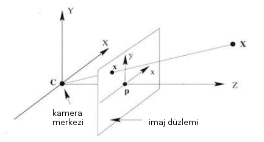
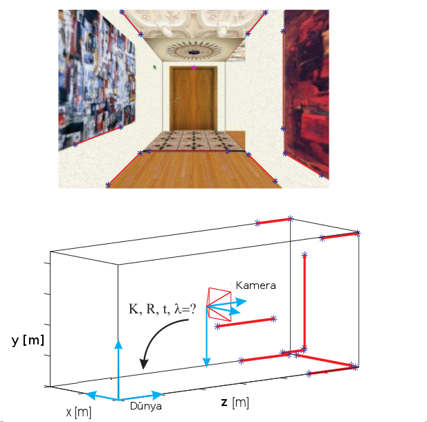
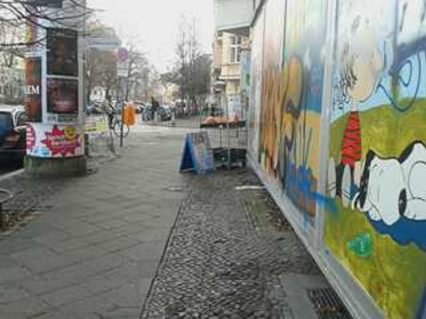
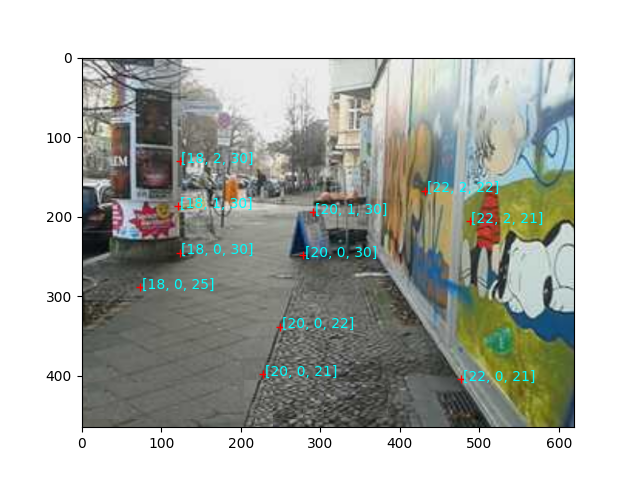
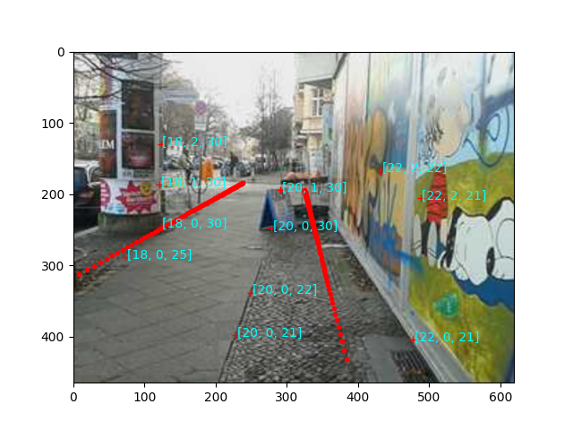

Yansıtma Matrisini Bilinen 3D-2D Eşlemelerinden Hesaplamak
Çoğu kaynakta ve bu ders anlatımlarında kameraya yansıtılan görüntü, dünya kordinatları kavramları birbirine karışık şekilde gösterildi.

Fakat dünya kordinat sistemi, kamera merkezi gibi kavramları birbirinden ayırmamız gerekiyor. Çünkü uygulamalarda kamera z kordinatı üzerinde durmuyor ve kamera merkezi ile dünya merkezi birbirinden farklı, ayrıca çoğunlukla ne $P$'nin ne de onu oluşturan içsel parametre matrisi (intrinsic parameter matrix) $K$ biliniyor.
Önce kameranın nerede olduğuna bakalım. Kamera çoğunlukla dünya merkezinden değişik bir yerdedir, mesela elle tutulan bir cep telefonu durumunda boy yüksekliğinde ve $z$ kordinatına yönünde (ama üzerinde olmayabilir) doğru tutulmaktadır. Önündeki objelerin yerleri dünya (world) kordinatlarına göredir, ayrıca kameranın kendisi dünya merkezinden o noktaya bir döndürülme ve taşınma (rotation and translation) sonucu gelmiştir.

Bu döndürülme ve taşınma matrislerini $R,T$ olarak tanımlarsak,
$$ P = K \left[\begin{array}{c|c} R & t \end{array}\right]$$
olduğunu görmüştük, ve bu matris 3 x 4 boyutundadır, ki $K$ içsel parametre matrisi idi. Ayrıca biliyoruz ki $P$'yi baz alarak bir $X_i$ üç boyutlu noktasının iki boyutlu noktaya yansıması
$$ \lambda_i x_i = PX_i$$
olarak hesaplanıyor. Kordinatlar homojen kordinatlar, yani (vektörleri bir kerelik net olması için koyu renkle gösterirsek) $\mathbf{x}_i = \left[\begin{array}{ccc}x_i&y_i&1\end{array}\right]^T$, aynı şekilde $\mathbf{X}_i=\left[\begin{array}{cccc}X_i&Y_i&Z_i&1\end{array}\right]^T$.
$P$'yi nasıl hesaplarız? Bu hesap için elimizde belli sayıda dış dünyada üç boyutlu ve onun iki boyutlu yansımalarını içeren, birbiri ile eşlenmiş bir veri seti olduğunu varsayacağız. Bu veriyi elde etmek zor değil, profosyonel ölçümler için kamera önüne belli uzaklıkta, gerçek boyutları kesin bilinen bir obje konur, ve kamera görüntüsünde bu cismin bilinen noktalarının nereye tekabül ettiğine bakılır, vs. Ya da kabaca yeri bilinen objelerin piksel yerleri kaydedilir. Dış dünyada şöyle bir resim olduğunu düşünelim,

Bu resimde ölçümleri bir dünya merkezine göre almak lazım. Resimde kamerayı ben tutuyorum, ve şimdi ölçümler için merkezin 20 metre arkamda ve 20 metre solumda olduğunu farzediyorum ve kameranın yerden yüksekliğini 2 metre kabul ediyorum. Şimdi bu merkeze göre resimde görülen bazı noktaları elle kendim seçerim, ve kabaca onların uzaklıklarını biliyordum, ona göre üç boyutlu uzaklık atayıp, ayrıca bu noktaların hangi piksel kordinatında olduğunu bir imaj programı üzerinden yine kendim bulup bu eşlemeyi bir yere kaydederim. Görsel olarak irdeleme kolay olsun diye bunları aynı resim üzerinde ekrana basarsak,
w = 620; h = 465
from PIL import Image
im = Image.open('out-cam.png')
plt.imshow(im)
x = [[228, 398],\
[249, 338],\
[123, 245],\
[121, 186],\
[278, 248],\
[488,205],\
[291,194],\
[432,167],\
[73,288],\
[477,404],\
[123,130]]
X = [[20,0,21],\
[20,0,22],\
[18,0,30],\
[18,1,30],\
[20,0,30],\
[22,2,21],\
[20,1,30],\
[22,2,22],\
[18,0,25],\
[22,0,21],\
[18,2,30]]
for i in range(len(x)):
plt.plot(x[i][0],x[i][1],'r+')
plt.text(x[i][0]+2,x[i][1]+2,str(X[i]),color='cyan')
plt.savefig('out-cam2.png')

Bunlar çok mantıksız üç boyutlu değerler değiller herhalde.
$P$'nin hesabına gelelim. Her veri noktası $i$ için elimizde bir $\lambda_i x_i = PX_i$ denklemi olduğuna göre, önce her bu tür denklemi $PX_i-\lambda_ix_i=0$ olarak düzenlersek ve bu denklemleri üst üste gelecek şekilde koyarsak,
$$
\left[\begin{array}{ccccccc}
X_1^T & 0 & 0 & -x_1 & 0 & 0 & \dots \\
0 & X_1^T & 0 & -y_1 & 0 & 0 & \dots \\
0 & 0 & X_1^T & -1 & 0 & 0 & \dots \\
X_2^T & 0 & 0 & 0 & -x_2 & 0 & \dots \\
0 & X_2^T & 0 & 0 & -y_2 & 0 & \dots \\
0 & 0 & X_2^T & 0 & -1 & 0 & \dots \\
\vdots & \vdots & \vdots & \vdots & \vdots & \vdots &
\end{array}\right]
\left[\begin{array}{c}
p_1^T \\ p_2^T \\ p_3^T \\ \lambda_1 \\ \lambda_2 \\ \vdots
\end{array}\right] = 0
$$
sistemini elde ederiz. $p_1,p_2,p_3$ degiskenleri $P$ matrisinin satırlarıdır. Üstteki matris daha fazla veri noktası için sağa ve aşağı doğru uzayacaktır tabii.
Üstteki matrisi, $M$ diyelim, görüldüğü gibi hazırladıktan sonra, ve çarpılan kolon vektörüne $v$ dersek artık,
$$ Mv = 0$$
denklemini çözebiliriz. Bu denklemi yaklaşıksal olarak çözmek için problemi bir $||v||=1$ şartına bağlı olmak üzere $||Mv||$ minimizasyon problemi olarak görebiliriz, yani "sıfıra olabildiğince yaklaşma problemi" olarak, ki bu problem çözümü için SVD kullanılabilir, daha fazla detaylar [3] yazısında. Peki $||v||=1$ şartını nasıl getirebiliyoruz? Bunun sebebi homojen kordinat sisteminin getirdiği bir avantajla alakalı; homojen kordinat sistemindeki noktalar "belli bir ölçek (up to scale)" içinde tanımlıdır, ve mesela 2 boyutlu bir nokta ve herhangi bir sabit $\alpha$ için $\mathbf{x} = \left[\begin{array}{ccc}x&y&w\end{array}\right] = \left[\begin{array}{ccc}\alpha x& \alpha y& \alpha w\end{array}\right] = \left[\begin{array}{ccc}x/w&y/w&1\end{array}\right]$ noktalarının hepsi aslında aynı 2 boyutlu noktadır. Bunun sonucu olarak $M$ de belli bir ölçek içinde tanımlı olacaktır, ve o zaman $||v|| = 1$ farz edebiliriz. Bu tabii ki hesabımız için faydalı oldu yoksa SVD bazlı minimizasyon kullanamazdık.
from scipy import linalg
def compute_P(x,X):
n = x.shape[1]
if X.shape[1] != n:
raise ValueError("Number of points don't match.")
M = np.zeros((3*n,12+n))
for i in range(n):
M[3*i,0:4] = X[:,i]
M[3*i+1,4:8] = X[:,i]
M[3*i+2,8:12] = X[:,i]
M[3*i:3*i+3,i+12] = -x[:,i]
print M.shape
U,S,V = linalg.svd(M)
return V[-1,:12].reshape((3,4))
xx = np.array(x)
# h'den cikar cunku imaj programlari sol ustu (0,0) olarak kabul
# ediyor, bizim hesap icin sol at (0,0) olmali
xx[:,1] = h-xx[:,1]
xx = np.hstack((xx,np.ones((len(x),1))))
XX = np.array(X)
XX = np.hstack((XX,np.ones((len(X),1))))
P = compute_P(xx.T,XX.T)
print P
(33, 23)
[[ -4.01225744e-02 5.31972373e-03 -1.06308256e-02 9.71131258e-01]
[ -9.79700368e-04 -2.64464969e-02 -1.09893337e-02 2.33086445e-01]
[ -1.80165364e-05 5.44992018e-06 -3.40782252e-05 8.40827305e-04]]
$P$'yi hesapladık. Bu $P$'yi şimdi resme bir üç boyutlu şekil yansıtmak için kullanalım. Mesela iki metre solumdan bir metre sağımdan çıkan yerden uzağa doğru yol üzerinde giten iki tane çizgiyi iki boyuta yansıtalım.
res1 = np.array([[18, 0, 20+i, 1.] for i in np.linspace(0,30,100)])
res2 = np.array([[21, 0, 20+i, 1.] for i in np.linspace(0,30,100)])
X3 = np.dot(P, res1.T)
X3 = X3 / X3[2]
im = Image.open('out-cam.png')
plt.imshow(im)
for xx in X3.T:
plt.hold(True)
if xx[0] > w or xx[0] < 0: continue
if xx[1] > h or xx[1] < 0: continue
plt.plot(xx[0],h-xx[1],'r.')
plt.hold(True)
X3 = np.dot(P, res2.T)
X3 = X3 / X3[2]
for xx in X3.T:
plt.hold(True)
if xx[0] > w or xx[0] < 0: continue
if xx[1] > h or xx[1] < 0: continue
plt.plot(xx[0],h-xx[1],'r.')
plt.savefig('out-cam4.png')

$R,T$ Hesabı
Bilinen $P$ ve $R,T$ üzerinden $K$'yi hesaplamak için $\left[\begin{array}{c|c}R&t\end{array}\right]$'nin cebirsel olarak neyi ifade ettigini hatırlayalım,
$$ \left[\begin{array}{c|c} R & t \end{array}\right] = \left[\begin{array}{ccc|c} r_{1,1} & r_{1,2} & r_{1,3} & t_1 \\ r_{2,1} & r_{2,2} & r_{2,3} & t_2 \\ r_{3,1} & r_{3,2} & r_{3,3} & t_3 \end{array}\right] $$
Çoğunlukla üstteki matrise bir ekstra $\left[\begin{array}{cccc}0&0&0&1\end{array}\right]$ satırı eklenir, böylece matris kare haline gelir, ve böylece dönüş ve taşınmanın basit çarpım olarak ayrıştırılabilmesi sağlanır.
$$ \left[\begin{array}{c|c} R & t \\ \hline 0 & 1 \end{array}\right] = \left[\begin{array}{c|c} I & t \\ \hline 0 & 1 \end{array}\right] \left[\begin{array}{c|c} R & 0 \\ \hline 0 & 1 \end{array}\right] $$
$$ = \left[\begin{array}{ccc|c} 1 & 0 & 0 & t_1 \\ 0 & 1 & 0 & t_1 \\ 0 & 0 & 1 & t_1 \\ \hline 0 & 0 & 1 & 1 \end{array}\right] \left[\begin{array}{ccc|c} r_{1,1} & r_{1,2} & r_{1,3} & 0 \\ r_{2,1} & r_{2,2} & r_{2,3} & 0 \\ r_{3,1} & r_{3,2} & r_{3,3} & 0 \\ \hline 0 & 0 & 1 & 1 \end{array}\right] $$
$P$ Üzerinden $K,R,T$
$K$'yi hesabı için şunu hatırlarız: Her matrisin bir QR ayrıştırmasının olduğunu biliyoruz. O zaman eldeki $P$'yi ayrıştırarak $R,t$'yi bilmeden direk $K,R,t$ hesaplarını yapabiliriz.
K,R = linalg.rq(P[:,:3])
T = np.diag(np.sign(np.diag(K)))
if linalg.det(T) < 0: T[1,1] *= -1
K = np.dot(K,T)
R = np.dot(T,R)
t = np.dot(linalg.inv(K),P[:,3])
print K
print R
print t
[[ 2.99407581e-02 5.97285792e-03 2.86183659e-02]
[ 0.00000000e+00 -2.79384510e-02 6.37066885e-03]
[ 0.00000000e+00 0.00000000e+00 3.89309986e-05]]
[[-0.88366792 -0.15133543 0.44297698]
[-0.07045937 0.9785196 0.19373918]
[-0.46278126 0.13998922 -0.87534937]]
[ 12.47297147 -3.41799407 21.59788692]
Gerçi ayrıştırma özgün (unique) değil, bir işaret belirsizliği olabiliyor, ama bunun çaresi var, detaylar için [1, sf. 108]. Bu hesabın bize ne verdiğini tekrar vurgulamak lazım - sadece $P$'ye bakarak hem $K$'yi hem de kameranın ne kadar hareket ettiğini bulmuş olduk. Bu kuvvetli bir özellik.
Bu şekilde bulunan $R,t$ belki ölçümlerin kalite kontrolu için kullanılabilir. Mesela $R,t$'nin ne olduğunu kesin biliyorduk, ama $P$ ayrıştırması bize beklediğimizden farklı bir $R,t$ verdi. O zaman belki 2D-3D eşleştirmesi daha iyi olabilirdi.
Kaynaklar
[1] Solem, Computer Vision with Python
[2] Dissecting the Camera Matrix, Part 2: The Extrinsic Matrix, http://ksimek.github.io/2012/08/22/extrinsic/
[3] Bayramlı, Lineer Cebir, Lineer Cebir ile Minimizasyon
Yukarı